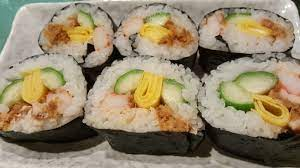
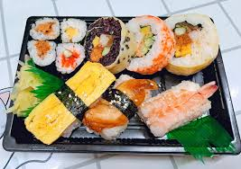
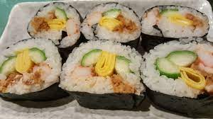
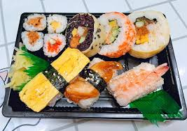
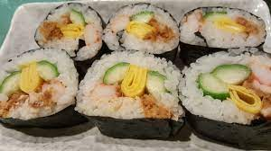
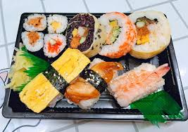

2.請先在白飯上放上葉菜類、寬的蛋皮或是半張海苔，然後再放上其他食材。
3.依各種食材的顏色層層地排放，像是醃蘿蔔或小黃瓜等比較重的食材請留到最後再放，讓它們可以固定壽司的結構。
4.捲壽司時，注意不要讓食材跑出來，彎曲手指像是要將食材包覆起來似地固定好，再將壽司往前推動捲起。
5.用壽司捲簾再捲一次，固定好壽司的形狀。刀子先沾上醋水或油之後再切。
您若擔心捲壽司時，中間的食材常常會被擠向某側，請試著將放置食材的順序改變一下，只要將比較重的食材留到最後再放，壽司的成品就會很漂亮。

